专题02 数轴上的行程问题的五种模型

目录
题型一：数轴上的行程问题之相遇问题 1
题型二：数轴上的行程问题之相距问题 4
题型三：数轴上的行程问题之三点中点问题 9
题型四：数轴上的行程问题之新定义型问题 16
题型五：数轴上的行程问题之折线数轴问题 23
题型一：数轴上的行程问题之相遇问题
1．（24-25七年级上·河南驻马店·阶段练习）如图，A、B分别为数轴上的两点，A点对应的数为 ，B点对应的数为55，现有一动点P以6个单位/秒的速度从B点出发，同时另一动点Q恰好以4个单位/秒的速度从A点出发：
，B点对应的数为55，现有一动点P以6个单位/秒的速度从B点出发，同时另一动点Q恰好以4个单位/秒的速度从A点出发：
(1)若P向左运动，同时Q向右运动，在数轴上的C点相遇，求C点对应的数．
(2)若P向左运动，同时Q向左运动，在数轴上的D点相遇，求D点对应的数．
(3)若P向左运动，同时Q向右运动，当P与Q之间的距离为20个单位长度时，求此时Q点所对应的数．
2．（24-25七年级上·吉林通化·期中）如图，点A、B是数轴上的两点，点B表示的数为5，且A、B两点之间的距离为15个单位长度，动点P、Q分别从A、B同时出发，点P以每秒3个单位长度的速度沿数轴向右运动，点Q以每秒2个单位长度的速度沿数轴向左运动，设运动时间为t秒．

(1)当点Q运动到点A时，求出t的值；
(2)直接用含t的代数式分别表示数轴上的点P、Q对应的数；
(3)求t为何值时，P、Q两点相遇，并求出此时P点对应的数；
(4)当点P、Q间的距离是点A、B间距离的 时，直接写出t的值．
时，直接写出t的值．
3．（24-25七年级上·北京·期中）对于数轴上的点 ，给出如下定义：若在数轴上存在点P，使得点P到点B的距离是点B到点A距离的K倍（K为有理数），则称点B为点A的K倍关联点．
，给出如下定义：若在数轴上存在点P，使得点P到点B的距离是点B到点A距离的K倍（K为有理数），则称点B为点A的K倍关联点．
(1)当
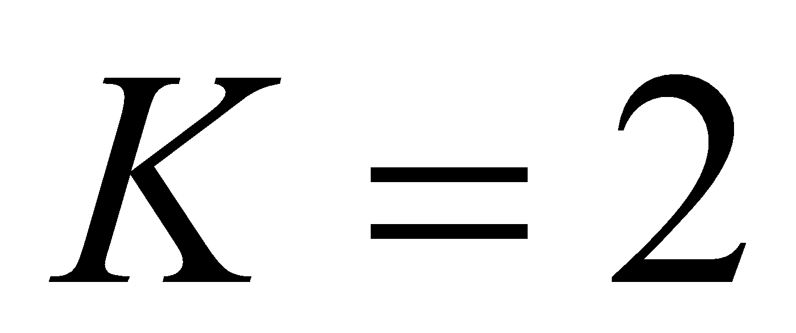
时①点A表示的数为2，点B表示的数为点3，点P位于原点O和点A之间，则点P表示的数为______．
②点P表示的数为2，点A表示的数为点3，则点B表示的数为_______．
(2)点A表示的数为t，点B表示的数为 ，点P位于点之间（可以与重合），直接写出K的取值范围．
，点P位于点之间（可以与重合），直接写出K的取值范围．
题型二：数轴上的行程问题之相距问题
4．（24-25七年级上·河北张家口·期末）如图，A，B两点在数轴上对应数分别为 ，12，甲、乙分别从 A，B处同时出发，甲的速度为1个单位长度/秒，乙的速度为3个单位长度/秒，设运动的时间为t秒．
，12，甲、乙分别从 A，B处同时出发，甲的速度为1个单位长度/秒，乙的速度为3个单位长度/秒，设运动的时间为t秒．
(1) ；
；
(2)如果甲、乙相向运动 （甲向右运动，乙向左运动），记相遇点为 P，求点 P 表示的数及此时t的值；
(3)如果甲、乙都向左运动，当t为何值时，甲、乙之间恰好相距5个单位长度？
5．（24-25七年级上·吉林·阶段练习）如图，已知数轴上点A表示的数为6，B是数轴上在点A左侧的一点，且A，B两点间的距离为10．动点P从点A出发，以每秒6个单位长度的速度沿数轴向左匀速运动，设运动时间为 秒．
秒．

(1)数轴上点B表示的数是______；
(2)动点Q从点B出发，以每秒4个单位长度的速度沿数轴向左匀速运动，若点P，Q同时出发．求：
①当点P运动多少秒时，点P与点Q相遇？
②当点P运动多少秒时，点P与点Q间的距离为8个单位长度？
6．（24-25七年级上·陕西宝鸡·期末）在数轴上原点 表示数0，A点在原点的左侧，所表示的数是
表示数0，A点在原点的左侧，所表示的数是 ；
； 点在原点的右侧，所表示的数是
点在原点的右侧，所表示的数是 ，且，满足
，且，满足 ．
．
(1)求、的值；
(2)点 、
、 是数轴上的两个动点，点从点A出发沿数轴向右运动，同时点从点出发沿数轴向右运动．且点的速度是点速度的2倍，经过6秒钟点与点相遇，求点与点的速度分别为每秒几个单位；
是数轴上的两个动点，点从点A出发沿数轴向右运动，同时点从点出发沿数轴向右运动．且点的速度是点速度的2倍，经过6秒钟点与点相遇，求点与点的速度分别为每秒几个单位；
(3)若、两点同时以（2）中各自的速度相向而行，点从点A出发沿数轴向右运动，同时点从点出发沿数轴向左运动，且点运动到点后原速返回，当点到达点A时，、停止运动，经过几秒钟，、两点相距6个单位长度．
7．（24-25七年级上·广东惠州·期中）已知在数轴上点A表示的数为8，B在A点左侧，且A，B两点间的距离为14．动点P从点A出发，以每秒4个单位长度的速度沿数轴向左匀速运动，点Q从B点向右运动，速度为每秒2个单位，PQ同时出发，设运动时间为 秒．
秒．
(1)数轴上点B表示的数是______；当点P运动到 的中点时，它所表示的数是______．
的中点时，它所表示的数是______．
(2)动点Q从点B出发，以每秒2个单位长度的速度沿数轴向右匀速运动，求：
①当点P和点Q运动多少秒时，点P和点Q第一次相遇？
②当点P运动多少秒时，点P与点Q间的距离为6个单位长度？
8．（24-25七年级上·陕西宝鸡·期中）【问题情境】
如图2所示（下图），A，B两点在数轴上对应的数分别为，12，甲、乙分别从A，B处同时出发，甲的速度为1个单位长度/秒，乙的速度为3个单位长度/秒，设运动的时间为t秒．

(1)______．
(2)如果甲、乙相向运动（甲向右运动，乙向左运动），记相遇点为P，则点P表示的数为______，此时 ______．
______．
(3)如果甲、乙都向左运动，
①当 为何值时，乙恰好追上甲？
为何值时，乙恰好追上甲？
②当为何值时，甲、乙之间恰好相距5个单位长度？
题型三：数轴上的行程问题之三点中点问题
9．（25-26七年级上·江苏南京·阶段练习）如图：在数轴上A点表示数a，B点表示数b，C点表示数c，b是最小的正整数，且a、c满足
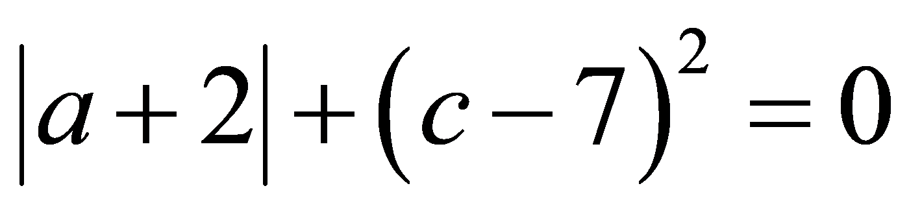
．
(1) ______，
______， ______，
______， ______；
______；
(2)若点A、点B和点C分别以每秒1个单位长度、4个单位长度和2个单位长度的速度在数轴上同时向右运动．
①假设t秒钟后，A，B，C三点中其中一点是另外两点的中点，求此时t的值；
②假设t秒钟后，用 表示A、B两点的距离，用
表示A、B两点的距离，用 表示A、C两点的距离，是否存在常数m，使
表示A、C两点的距离，是否存在常数m，使
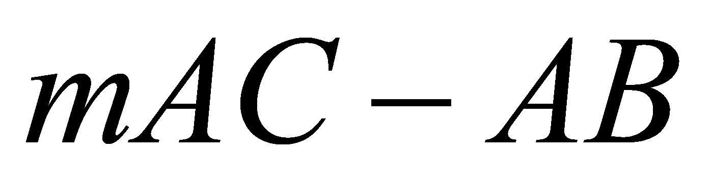
的值为定值？若存在，求m的值，并写出该定值；若不存在，请说明理由．10．（24-25七年级上·四川成都·期末）已知数轴上的 两点分别对应的数字为
两点分别对应的数字为 ，且满足
，且满足 ，已知点
，已知点 是数轴上一动点，以每秒
是数轴上一动点，以每秒 个单位长度的速度沿数轴向右匀速运动，设运动时间为．
个单位长度的速度沿数轴向右匀速运动，设运动时间为．
(1)填空： _____，
_____， ______，的中点在数轴上对应的数是______．
______，的中点在数轴上对应的数是______．
(2)若动点从 出发，点
出发，点 从
从 点同时出发，且以每秒
点同时出发，且以每秒 个长度的速度向负方向运动，若点
个长度的速度向负方向运动，若点
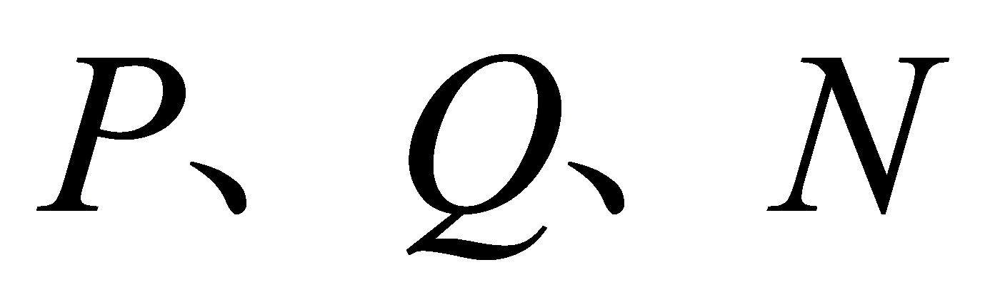
中有一点是另外两点构成线段的中点，则此时三点就形成“美丽组”，求出点运动多少秒时，三点能形成“美丽组”？(3)若点从出发秒后，点从点出发，且以每秒个长度的速度向负方向运动，点运动到中点后立即返回以同样的速度再沿数轴向左运动，当 时，求运动的时间
时，求运动的时间 ．
．
11．（24-25七年级上·广东汕头·期末）已知数轴上点A表示的数为6，B是数轴上在A左侧的一点，且A，B两点间的距离为10．动点P从点A出发，以每秒4个单位长度的速度沿数轴向左匀速运动，设运动时间为 秒．
秒．
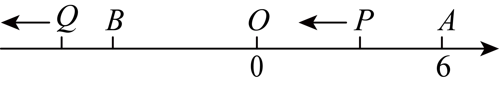
(1)数轴上点B表示的数是______；当点P运动到 的中点时，它所表示的数是______；
的中点时，它所表示的数是______；
(2)动点Q从点B出发，以每秒2个单位长度的速度沿数轴向左匀速运动，点P，Q同时出发．
①用含t的代数式表示：点P对应的数是______，点Q对应的数是______；
②如果P，B，Q中有一个点是另外两点所构成线段的中点，就称P，B，Q为一组“平衡点”．求出点P运动多少秒时，点P，B，Q能构成一组“平衡点”？
(3)若点P出发2秒后点Q再从点B出发，并以每秒2个单位长度的速度沿数轴向左匀速运动，运动至点
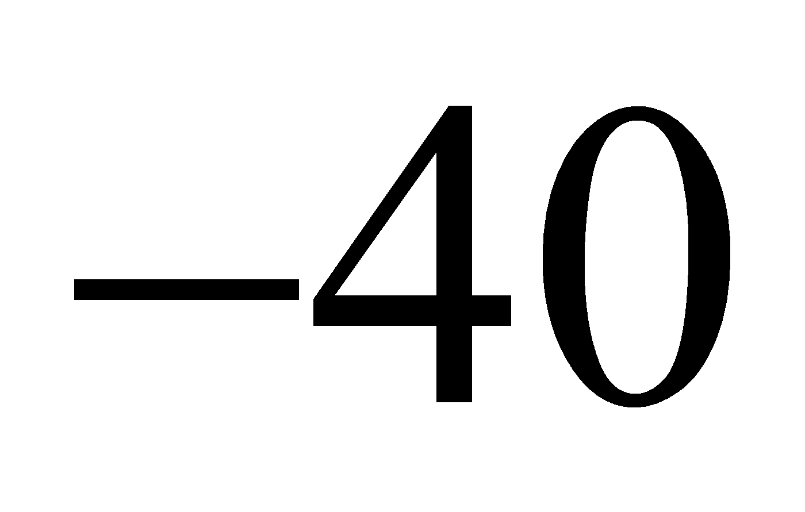
处加速，以每秒5个单位长度的速度继续向左运动．直接写出当t等于何值时，P，Q之间的距离为6．12．（24-25七年级上·河南郑州·期中）【阅读】：
通过学习我们知道，
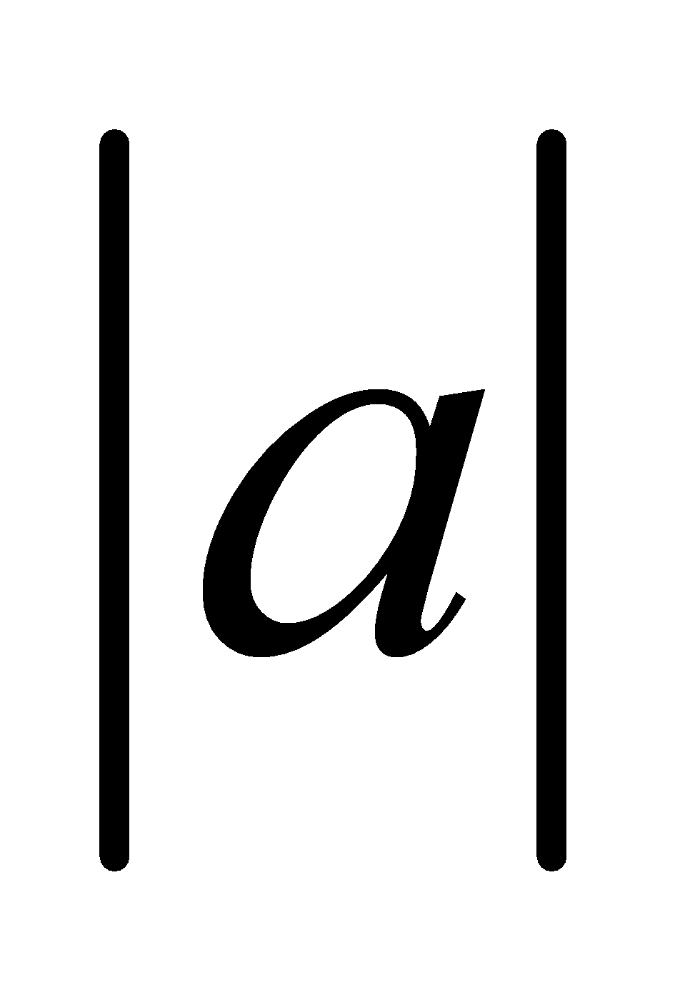
的几何意义是：数轴上表示数 的点到原点的距离．由于可以看作
的点到原点的距离．由于可以看作 ，那么的几何意义为数轴上表示数与
，那么的几何意义为数轴上表示数与 的两点间的距离．这个结论还可以推广为：点在数轴上分别表示数
的两点间的距离．这个结论还可以推广为：点在数轴上分别表示数 ，那么之间的距离可表示为
，那么之间的距离可表示为 ．
．
【探索】：
（1）数轴上表示和 的两点之间的距离是_______．
的两点之间的距离是_______．
（2）若使所表示的点到表示和的点的距离之和为 ，所有符合条件的整数的和为．
，所有符合条件的整数的和为．
【动手折一折】：
小博同学在草稿纸上画了一条数轴进行操作探究：
（3）折叠纸面，使 表示的点和
表示的点和 表示的点重合，
表示的点重合，
① 表示的点和_______表示的点重合；
表示的点和_______表示的点重合；
②已知（ 在
在 的左侧）两点之间的距离为
的左侧）两点之间的距离为 ，且两点经折叠后重合，则点表示的数是，点表示的数是_______．
，且两点经折叠后重合，则点表示的数是，点表示的数是_______．
【拓展延伸】：
（4）动点 同时从
同时从 对应的点出发沿数轴向右运动，点，点的速度分别为个单位长度
对应的点出发沿数轴向右运动，点，点的速度分别为个单位长度 和个单位长度，是否存在某一时刻，使得原点
和个单位长度，是否存在某一时刻，使得原点 这三个点中，有一个点恰为另外两点所连线段的中点？若存在，求出此时点所代表的数；若不存在，请说明理由．
这三个点中，有一个点恰为另外两点所连线段的中点？若存在，求出此时点所代表的数；若不存在，请说明理由．
题型四：数轴上的行程问题之新定义型问题
13．（25-26七年级上·浙江嘉兴·期中）阅读理解：
对于数轴上的A，B，P三点，给出如下定义：若其中一个点到另外两个点的距离恰好满足3倍的数量关系，则称该点是另外两个点的“友好点”．
例如：如图，数轴上点A，B，P表示的数分别是1，2，5，此时称点B是点A，P的“友好点”．

知识运用：
(1)当点A表示数，点B表示数2时，下列各数： ，
， ，
， 中，是A，B两点的“友好点”表示的数是_____．
中，是A，B两点的“友好点”表示的数是_____．
(2)当点A表示数，点B表示数1时，点P是数轴上的一个动点．①若点P在点A，B之间，且点P是点A，B的“友好点”，求此时点P表示的数是多少？
②若点P在点B的右侧，当点A，B，P中，有一个点恰好是另外两点的“友好点”时，请你直接写出点P表示的数是_____．
14．（25-26七年级上·河北保定·阶段练习）知识应用：
随着祖国的日益强大，经济发展迅速，人民的生活越来越好，幸福指数也越来越高．老师在数学课上给出了定义：在数轴上，若点C到点A 的距离恰好是3，则称点C为点A的“幸福点”；若点C到点A，B的距离之和为6，则称点C为点A，B的“幸福中心”．
（1）若点 A 表示的数是4，则点A的“幸福点”点C 表示的数是
（2）已知点 M 表示的数是m，点N 表示的数是n，且 则 ； ；
则 ； ；
若点C为点 M，N的“幸福中心”，则点C表示的数可以是 (填一个满足要求的数即可)；
知识拓展：
（3）若点 A 表示的数是，点B 表示的数是3，点P 表示的数是8，一个电子蚂蚁Q从点P出发，以2单位/秒的速度沿数轴向左运动，若经过t秒电子蚂蚁Q 正好到达点A，B的“幸福中心”，求t的值．
（4）在（3）的条件下，在数轴上是否存在点C (点C与点B不重合)，使得电子蚂蚁Q既是A、B的“幸福中心”又是A、C的“幸福中心”?若存在，请直接写出点C表示的数，若不存在，请说明理由．
15．（24-25七年级上·湖北武汉·阶段练习）【建立概念】如图，A、为数轴上不重合的两定点，点也在该数轴上，我们比较线段 和
和 的长度，将较短线段的长度定义为点到线段的“靠近距离”特别地，若线段和的长度相等，则将线段或的长度定义为点到线段的“靠近距离”．
的长度，将较短线段的长度定义为点到线段的“靠近距离”特别地，若线段和的长度相等，则将线段或的长度定义为点到线段的“靠近距离”．
【概念理解】如图，数轴的原点为 ，点A表示的数为
，点A表示的数为 ，点表示的数为．
，点表示的数为．
（1）点到线段的“靠近距离”为______；
（2）若数轴上有一个动点P，满足条件，求点P表示的数；
【拓展应用】
（3）如图，在数轴上，点表示的数为 ，A表示的数为，点表示的数为
，A表示的数为，点表示的数为
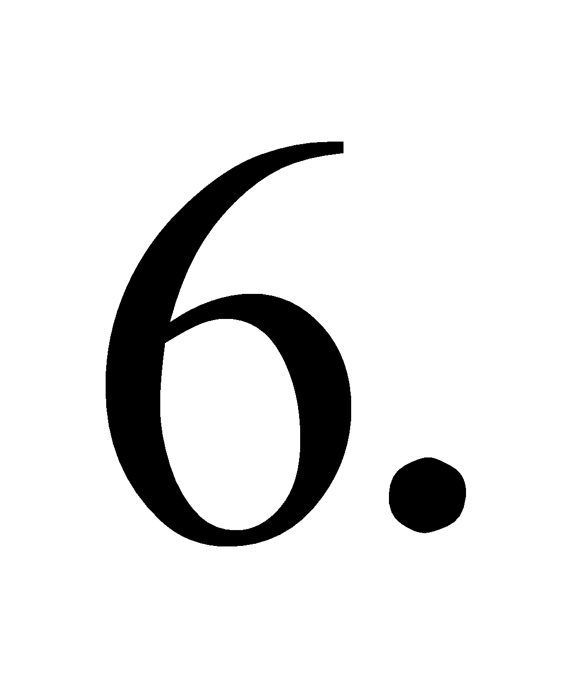
点以每秒个单位长度的速度向正半轴方向移动时，点同时以每秒个单位长度的速度向负半轴方向移动设移动的时间为秒，当点到线段的“靠近距离”为时，求的值．
16．（25-26七年级上·安徽合肥·期中）【概念学习】
1．阅读绝对值拓展材料：点A，B在数轴上分别表示有理数a，b，A，B两点之间的距离表示为，在数轴上A，B两点之间的距离 ，例如：数轴上表示与的两点间的距离
，例如：数轴上表示与的两点间的距离 ；而
；而 ，则
，则
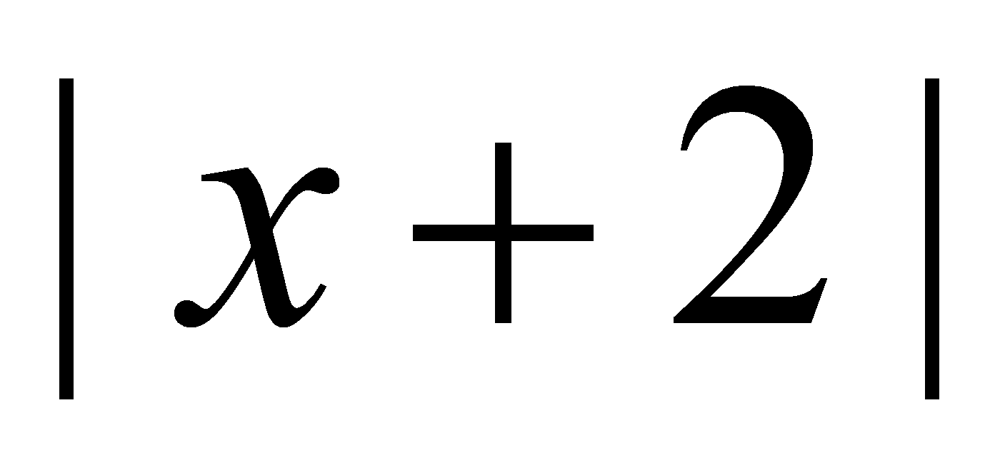
表示x与两点间的距离．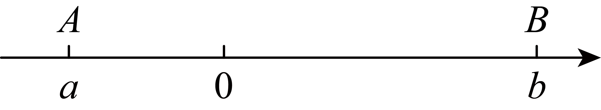
2．定义：点A，B，M为数轴上的任意三点（点M不与A，B重合），若点M到点A的距离是点M到点B的距离的x倍，则称点M是
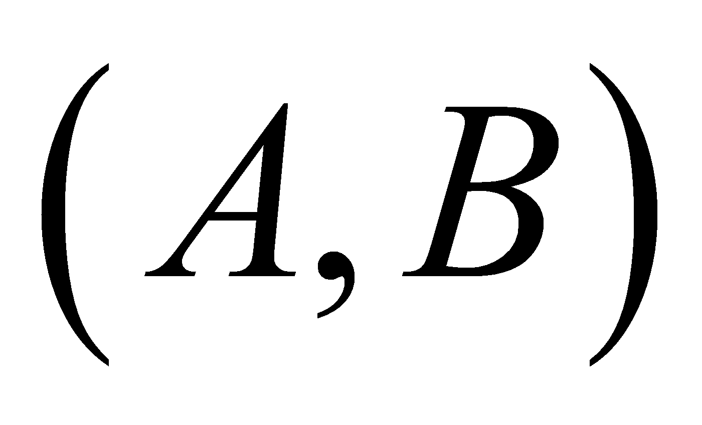
的“x值点”，记作： ．例如，点M表示的数为1，点A表示的数为，点B表示的数为3，此时
．例如，点M表示的数为1，点A表示的数为，点B表示的数为3，此时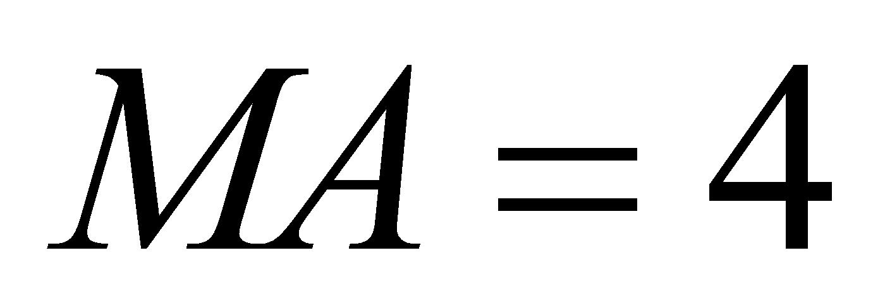
， ，
， ，则点M是的“2值点”，记作：
，则点M是的“2值点”，记作：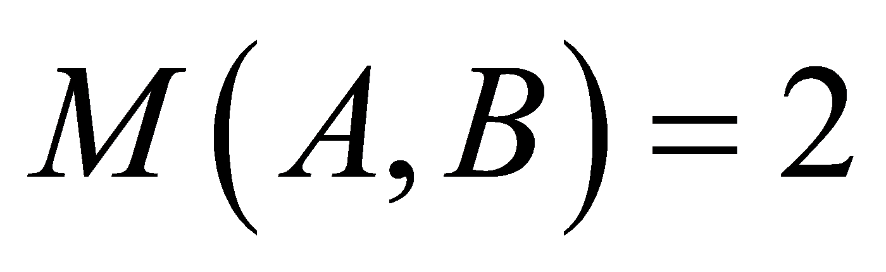
．
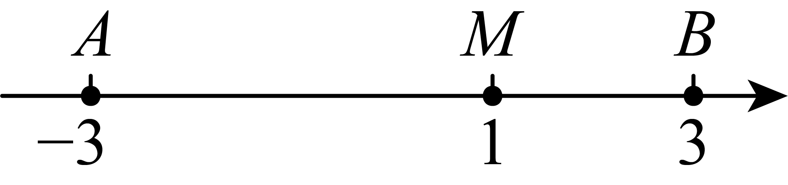
【初步认知】
（1）如图，点A，点B表示的数分别是和6；
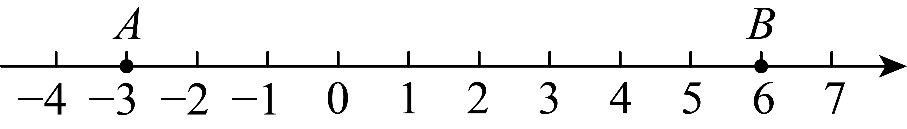
①已知如图，两点的距离为 ，数轴上任意一点C表示的数为x，则 两点的距离可以表示为 ．
两点的距离可以表示为 ．
②若点D，E表示的数分别是 ，3，则这两个点中是的“2值点”的点是 ；
，3，则这两个点中是的“2值点”的点是 ；
【深入思考】
（2）在数轴上，点F表示的数为，点G表示的数为10，从某时刻开始，若点P从原点O出发向右在数轴上做匀速直线运动，且点P的速度为1单位/秒，设运动时间为t秒，当
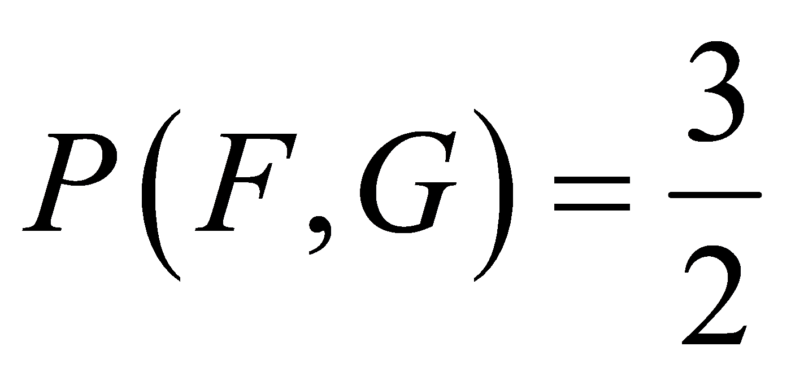
时，求出t的值；题型五：数轴上的行程问题之折线数轴问题
17．（24-25七年级上·江苏泰州·阶段练习）如图，将一条数轴在原点和点处各折一下，得到一条“折线数轴”．图中点表示 ，点表示
，点表示 ，点
，点 表示
表示 ，我们称点和点在数轴上相距
，我们称点和点在数轴上相距
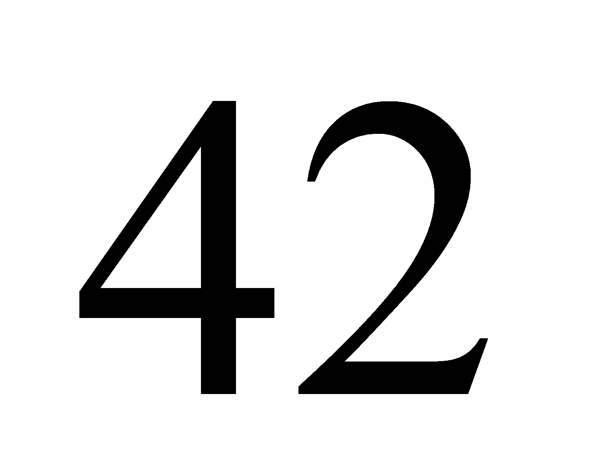
个长度单位．动点从点出发，始终以2单位/秒的速度沿着“折线数轴”的正方向终点运动，同时，动点从原点出发，也沿着“折线数轴”的正方向朝终点运动，点在 线段以
线段以 单位/秒的速度运动，在段以单位/秒的速度运动，设运动时间为秒．问：
单位/秒的速度运动，在段以单位/秒的速度运动，设运动时间为秒．问：
(1)动点、谁先到达终点？请通过计算说明．
(2)、两点第一次相遇时，求出相遇点所对应的数是多少？
(3)当为______时，、两点在数轴上相距的长度为个单位？
18．（24-25七年级上·河南·阶段练习）如图，将一条数轴在点B，点C，点D，点E处各折一下，得到“折线数轴”．图中点A 表示的数为 ，点B 表示的数为
，点B 表示的数为 ，点 C表示的数为，点D 表示的数为0，点E 表示的数为8，点F表示的数为12，动点P从点A出发，以每秒2个单位长度的速度沿着“折线数轴”的正方向移动，同时，动点Q从点F出发以每秒4个单位长度的速度沿着“折线数轴”的负方向移动，两个点上坡时的速度均是各自初始速度的一半，下坡时的速度均是各自初始速度的2倍，水平位置则保持初始速度不变．
，点 C表示的数为，点D 表示的数为0，点E 表示的数为8，点F表示的数为12，动点P从点A出发，以每秒2个单位长度的速度沿着“折线数轴”的正方向移动，同时，动点Q从点F出发以每秒4个单位长度的速度沿着“折线数轴”的负方向移动，两个点上坡时的速度均是各自初始速度的一半，下坡时的速度均是各自初始速度的2倍，水平位置则保持初始速度不变．
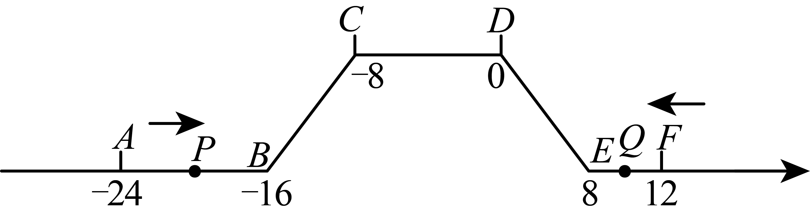
(1)动点P从点A运动到点F需要多少秒？
(2)P，Q两点在点M处相遇，求出相遇点M所对应的数是多少？
19.（24-25七年级上·四川成都·阶段练习）如图，将一条数轴在原点O和点B处各折一下，得到一条“折线数轴”，图中，点A表示的数为 ，点B表示的数为10，点C表示为18，我们称点A和点C在该数轴上的“折线距离”为24个长度单位，动点P从点A出发，以1单位/秒的速度沿着“折线数轴”的正方向运动，从点O运动到点B期间速度变为原来的两倍，之后立刻恢复原速；同时，动点Q从点C出发，以2单位/秒的速度沿着折线数轴的负方向运动，从点B运动到点O期间速度变为原来的一半，之后也立刻恢复原速，设运动的时间为t秒，则：
，点B表示的数为10，点C表示为18，我们称点A和点C在该数轴上的“折线距离”为24个长度单位，动点P从点A出发，以1单位/秒的速度沿着“折线数轴”的正方向运动，从点O运动到点B期间速度变为原来的两倍，之后立刻恢复原速；同时，动点Q从点C出发，以2单位/秒的速度沿着折线数轴的负方向运动，从点B运动到点O期间速度变为原来的一半，之后也立刻恢复原速，设运动的时间为t秒，则：
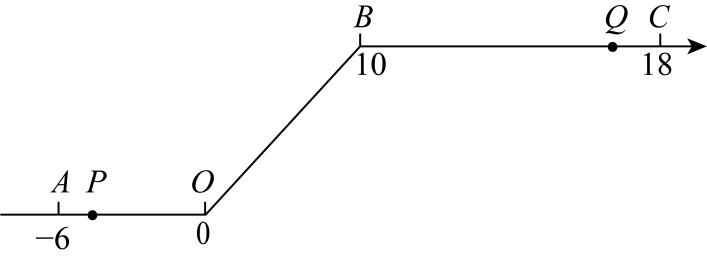
(1)动点P从点A运动至点C需要______秒，动点Q从点C运动至点A需要_______秒；
(2)若P，Q两点在点M处相遇，求相遇时间t以及点M在折线数轴上所表示的数；
(3)是否存在t值，使得P、O两点在数轴上的“折线距离”与Q、B两点在数轴上的的“折线距离”相等．
20．（23-24六年级下·黑龙江哈尔滨·阶段练习）已知，如图，数轴上依次有 、
、 、
、 三点，它们在数轴上对应的数分别是
三点，它们在数轴上对应的数分别是 、
、 、
、 ，其中、满足
，其中、满足
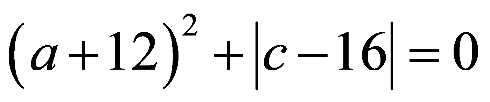
，点到点的距离为20．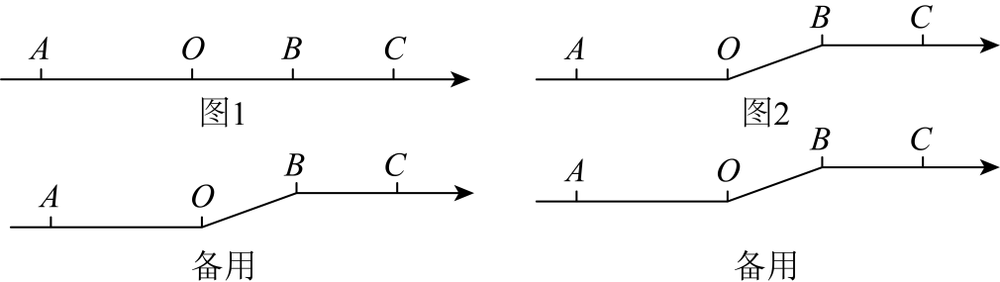
(1)求、、的值．
(2)如图1，动点 从点出发，以每秒2个单位长度的速度沿着数轴的正方向运动，动点
从点出发，以每秒2个单位长度的速度沿着数轴的正方向运动，动点 从点出发，以每秒1单位长度的速度沿着数轴的负方向运动，、两点同时出发，在点
从点出发，以每秒1单位长度的速度沿着数轴的负方向运动，、两点同时出发，在点 处相遇，求出相遇点所对应的数是多少；
处相遇，求出相遇点所对应的数是多少；
(3)如图2，将数轴在原点 和点处各折一下，得到一条“折线数轴”，（图中、两点在“折线数轴”上的距离为28个单位长度）．动点从点出发，以每秒2个单位长度的速度沿“折线数轴”的正方向运动，从点运动到点期间速度变为原来的一半，之后立刻恢复；同时，动点从点出发以每秒1个单位长度沿着“折线数轴”的负方向运动，从点运动到点期间速度变为原来的2倍，之后立刻恢复，设运动时间为
和点处各折一下，得到一条“折线数轴”，（图中、两点在“折线数轴”上的距离为28个单位长度）．动点从点出发，以每秒2个单位长度的速度沿“折线数轴”的正方向运动，从点运动到点期间速度变为原来的一半，之后立刻恢复；同时，动点从点出发以每秒1个单位长度沿着“折线数轴”的负方向运动，从点运动到点期间速度变为原来的2倍，之后立刻恢复，设运动时间为 秒，请直接写出当为何值时，、两点在“折线数轴”上的距离与、两点在“折线数轴”的距离相等．
秒，请直接写出当为何值时，、两点在“折线数轴”上的距离与、两点在“折线数轴”的距离相等．